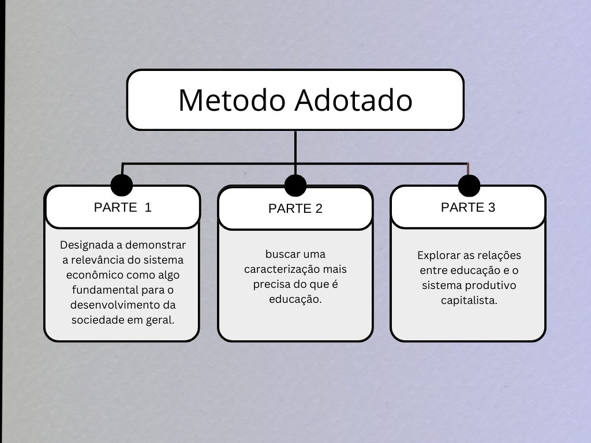

As relações entre capitalismo e educação no século XXI
Jorge Otavio de Souza Vieira - IFPR (2023)
Introdução
Para o entendimento do desenvolvimento da sociedade como se dá hoje em dia, a extensão do capitalismo é possivelmente um dos mais importantes assuntos a serem tratados. Durante o desenvolvimento capitalista, a sociedade se transformou como um todo, todos os costumes e culturas foram afetadas para que se adequassem aos interesses e normas que beneficiassem a ordem capitalista. A forma como se produz, as relações de trabalho, e até mesmo o modo de se pensar, foram alterados pelo modelo produtivo vigente. (MARX & ENGELS, 1997).
Diante deste cenário, a educação não só foi afetada pela forma com que se desenvolveu a sociedade capitalista, mas teve grande influência na forma como se deu o andamento deste mesmo processo. Nesta pesquisa buscarei esclarecer de forma mais precisa algumas relações entre o funcionamento das estruturas educacionais e as transformações econômicas trazidas pelo desenvolvimento capitalista.
O objetivo principal da pesquisa é mostrar que a educação não é um campo que se desenvolve independentemente das relações econômicas, mas que as transformações no campo produtivo são fundamentais para determinar transformações no campo educacional. Já que se trata de formar e qualificar a força de trabalho, que é um dos fatores fundamentais no desempenho econômico de qualquer país.
Para isso analisarei fontes bibliográficas importantes que abordam tanto o tema do desenvolvimento da produção capitalista quanto as transformações relativas à educação escolar e as relações entre estes dois fatores.
Metodo adotado
Para a realização do presente projeto, foi feita uma revisão bibliográfica com autores que escreveram sobre os temas tratados na pesquisa e que poderiam contribuir para o assunto. Além disso, artigos considerados pertinentes para o tema também foram escolhidos. Para o desenvolvimento do trabalho, dividiu-se a apresentação da pesquisa em três momentos, como mostrado na imagem abaixo:

PESQUISA
O ambiente escolar, para a maioria das pessoas, é o lugar onde vão passar suas primeiras experiências sociais fora do ambiente familiar, o que contribui para alterar a forma como a pessoa se vê em sociedade e também como vê o mundo em si, pode influenciar suas visões estéticas, éticas, políticas, etc. Por conta disso, a forma de ensino e o que é ensinado nas escolas são importantes para como se desenvolve a sociedade, e o contrário também é verdadeiro, visto que a educação é produzida dependendo do que uma certa civilização busca e como ela se desenvolve (VIANA, 2017).
Referências
PAIVA José Maria de; et al. 500 anos de educação no Brasil.Editora Autêntica, 2011.
MARX, Karl; ENGELS, Friedrich. Manifesto do Partido Comunista, Editora Avante, 1997.
VIANA, Nildo. O modo capitalista de produção. Rev Informe e Crítica, 2017.
ARANHA, Maria Lúcia de Arruda. A história da educação e da pedagogia. Editora Moderna, 2014.
PACHECO, Ricardo Gonçalves; MENDONÇA, Erasto Fortes. Educação, sociedade e trabalho: abordagem sociológica da educação. Rede e-Tec Brasil, 2012.
AGUDO, Marcela de Moraes; ZUCCHINI, Lilian Giacomini Cruz. O histórico da escola pública moderna, sua configuração contemporânea e função social. Rev Roteiro, 2018.
CELETI, Filipe Rangel. Origem da educação obrigatória: um olhar sobre a Prússia. Rev Saber Acadêmico, 2012.
Sobre
Trabalho desenvolvido por Jorge Otavio do Curso Técnico em Informática para Internet do Instituto Federal do Paraná, Campus Telêmaco Borba, como Projeto Integrador. Orientado pelo professor Diego Fernando Paes, e coorientado pelo professor Paulo Ricardo de Souza Silva.